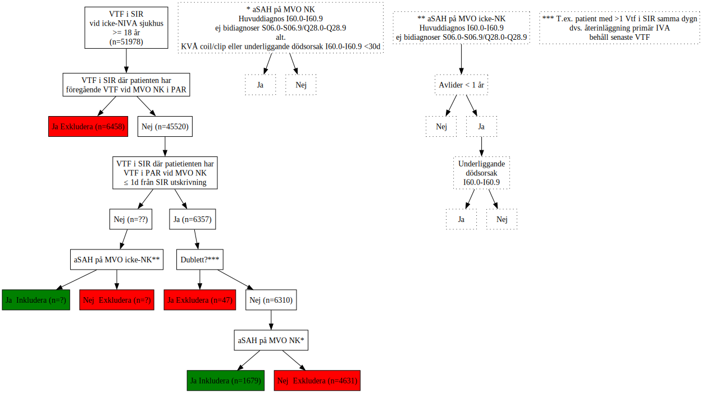

Code
import graphviz
from graphviz import Digraph
# Variable assignments for node labels
node_label_1 = 'VTF i SIR \n vid icke-NIVA sjukhus \n >= 18 år \n (n=51978)'
node_label_1a = 'VTF i SIR där patienten har \n föregående VTF vid MVO NK i PAR'
node_label_1b = 'Ja Exkludera (n=6458)'
node_label_1c = 'Nej (n=45520)'
node_label_2 = 'VTF i SIR där patietienten har \n VTF i PAR vid MVO NK \n ≤ 1d från SIR utskrivning'
node_label_3 = 'Nej (n=??)'
node_label_3a = 'VTF i SIR \ med samtidigt VTF i PAR \n vid MVO icke-NK ***'
node_label_3b = 'Ja (n=????)'
node_label_3c = 'Nej (n=??)'
node_label_4 = 'Ja (n=6357)'
node_label_4a = 'Dublett?***'
node_label_4b = 'Ja Exkludera (n=47)'
node_label_4c = 'Nej (n=6310)'
node_label_5 = 'aSAH på MVO NK*'
node_label_6 = 'aSAH på MVO icke-NK**'
node_label_7 = 'Ja \ Inkludera (n=?)'
node_label_8 = 'Nej \ Exkludera (n=?)'
node_label_9 = 'Ja Inkludera (n=1679)'
node_label_10 = 'Nej \ Exkludera (n=4631)'
node_label_11 = '* aSAH på MVO NK \n Huvuddiagnos I60.0-I60.9 \n ej bidiagnoser S06.0-S06.9/Q28.0-Q28.9 \n alt. \n KVÅ coil/clip eller underliggande dödsorsak I60.0-I60.9 <30d '
node_label_12 = '** aSAH på MVO icke-NK \n Huvuddiagnos I60.0-I60.9 \n ej bidiagnoser S06.0-S06.9/Q28.0-Q28.9'
node_label_13 = 'Ja'
node_label_14 = 'Nej'
node_label_15 = 'Avlider < 1 år'
node_label_16 = 'Nej'
node_label_17 = 'Ja'
node_label_18 = 'Underliggande \n dödsorsak \n I60.0-I60.9'
node_label_19 = 'Ja'
node_label_20 = 'Nej'
node_label_21 = '*** T.ex. patient med >1 Vtf i SIR samma dygn \n dvs. återinläggning primär IVA \n behåll senaste VTF'
# Create Digraph object
dot = Digraph()
# Add nodes with labels using variables
dot.node('node1', label=node_label_1, shape='box', style='filled', fillcolor='white')
dot.node('node1a', label=node_label_1a, shape='box', style='filled', fillcolor='white')
dot.node('node1b', label=node_label_1b, shape='box', style='filled', fillcolor='red')
dot.node('node1c', label=node_label_1c, shape='box', style='filled', fillcolor='white')
dot.node('node2', label=node_label_2, shape='box', style='filled', fillcolor='white')
dot.node('node3', label=node_label_3, shape='box', style='filled', fillcolor='white')
dot.node('node4', label=node_label_4, shape='box', style='filled', fillcolor='white')
dot.node('node4a', label=node_label_4a, shape='box', style='filled', fillcolor='white')
dot.node('node4b', label=node_label_4b, shape='box', style='filled', fillcolor='red')
dot.node('node4c', label=node_label_4c, shape='box', style='filled', fillcolor='white')
dot.node('node5', label=node_label_5, shape='box', style='filled', fillcolor='white')
dot.node('node6', label=node_label_6, shape='box', style='filled', fillcolor='white')
dot.node('node7', label=node_label_7, shape='box', style='filled', fillcolor='green')
dot.node('node8', label=node_label_8, shape='box', style='filled', fillcolor='red')
dot.node('node9', label=node_label_9, shape='box', style='filled', fillcolor='green')
dot.node('node10', label=node_label_10, shape='box', style='filled', fillcolor='red')
dot.node('node11', label=node_label_11, shape='box', style='dotted', fillcolor='white')
dot.node('node12', label=node_label_12, shape='box', style='dotted', fillcolor='white')
dot.node('node13', label=node_label_13, shape='box', style='dotted')
dot.node('node14', label=node_label_14, shape='box', style='dotted')
dot.node('node15', label=node_label_15, shape='box', style='dotted')
dot.node('node16', label=node_label_16, shape='box', style='dotted')
dot.node('node17', label=node_label_17, shape='box', style='dotted')
dot.node('node18', label=node_label_18, shape='box', style='dotted')
dot.node('node19', label=node_label_19, shape='box', style='dotted')
dot.node('node20', label=node_label_20, shape='box', style='dotted')
dot.node('node21', label=node_label_21, shape='box', style='dotted')
# Connect nodes
dot.edge('node1', 'node1a')
dot.edge('node1a', 'node1b')
dot.edge('node1a', 'node1c')
dot.edge('node1c', 'node2')
dot.edge('node2', 'node3')
dot.edge('node2', 'node4')
dot.edge('node4', 'node4a')
dot.edge('node4a', 'node4b')
dot.edge('node4a', 'node4c')
dot.edge('node4c', 'node5')
dot.edge('node3', 'node6')
dot.edge('node6', 'node7')
dot.edge('node6', 'node8')
dot.edge('node5', 'node9')
dot.edge('node5', 'node10')
dot.edge('node11', 'node13')
dot.edge('node11', 'node14')
dot.edge('node12', 'node15')
dot.edge('node15', 'node17')
dot.edge('node15', 'node16')
dot.edge('node17', 'node18')
dot.edge('node18', 'node19')
dot.edge('node18', 'node20')
dot